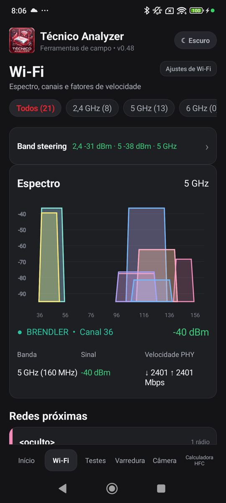
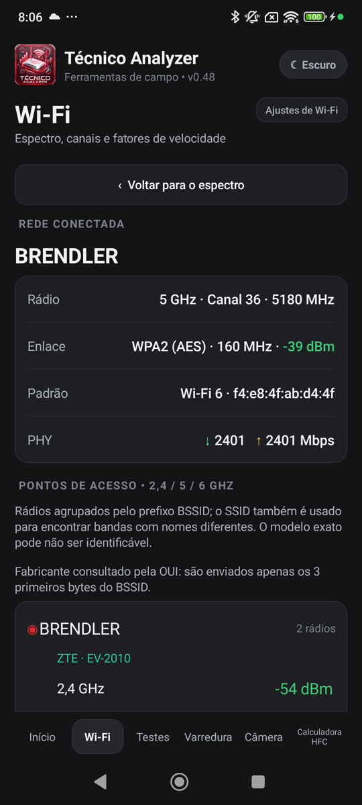

Técnico Analyzer
Ferramentas de campo para técnicos de instalação e manutenção
Telas





Como instalar
- Toque em Baixar para Android e abra o arquivo baixado.
- Se o Android pedir, permita instalar apps desta fonte (navegador ou gerenciador de arquivos).
- Toque em Instalar.
- Se o Google Play Protect avisar que o app não foi analisado, toque em Enviar para verificação (gratuito) ou, em Mais detalhes, instale sem verificar. O aviso aparece porque o app não vem da Play Store.
A partir da 0.41 o próprio app avisa quando há versão nova: toque em Atualizar e, só na primeira vez, ative Permitir desta fonte para o Técnico Analyzer. Quem estiver entre a 0.41 e a 0.56 recebe o aviso da 0.57 ao abrir o app — ou use Sobre › Verificar atualização.
Tinha uma versão de teste?
Versões instaladas antes desta página (enviadas por cabo ou por arquivo) têm outra assinatura. Desinstale a antiga uma vez e instale esta.
O que o app faz
- Etiqueta do roteador: uma foto lê rede, senhas, IP e login; conecta ao Wi-Fi e abre a configuração já preenchida.
- Wi-Fi: espectro com cor por rede, modem e mesh separados com fabricante e modelo, canais e padrões suportados pelo aparelho (Wi-Fi 4 a 7).
- Testes: velocidade (Brasil Banda Larga e servidor Claro dentro do app), latência, ping, Visual Trace (traceroute visual), portas TCP/UDP e gerador de tráfego.
- Varredura: dispositivos da rede local e sinal Wi-Fi por cômodo.
- Calculadoras HFC e G-PON: HFC (RG6/RG11, divisores e DCs) e G-PON (da NAP/DIO à ONT, passivos ópticos), sem internet.
- VoIP: atalho para a consulta de número da ABR Telecom (operadora atual e portabilidade).
- Diagnóstico para o cliente: QR code na tela Informações abre a ficha do aparelho dele no navegador.
Novidades da 0.57
- Wi-Fi: o sinal (dBm) das redes próximas volta a atualizar sozinho. Antes, ao voltar para a aba, os valores ficavam parados até fechar e abrir o app.
- Nova busca ao entrar na aba e a cada 35 s enquanto ela estiver aberta, sem perder a rolagem.
- A rede conectada mostra o sinal ao vivo, atualizado a cada 2 s; leituras antigas mostram há quanto tempo foram feitas.
Na 0.56
- Calculadoras: o cartão do menu agora se chama Calculadoras e abre a escolha entre HFC e G-PON.
- Nova Calculadora G-PON (NAP/DIO → ONT, 1490 nm): fibra, divisor 1:2, cordões, conectores e PTO, com a faixa estimada de RX na ONT.
- As duas funcionam sem internet, no layout de celular.
Na 0.55
- Cartão VoIP no fim do menu: atalho para a consulta pública de numeração da ABR Telecom.
- Um único botão abre consultanumero.abrtelecom.com.br: digite o número e veja a operadora atual e a portabilidade.
Na 0.54
- QR do diagnóstico do cliente na tela Informações, entre a ficha do aparelho e o suporte a padrões Wi-Fi.
- QR gerado no celular, link tocável e Compartilhar link.
Na 0.53
- Cartões do menu sem corte: o texto de apoio aparecia cortado na base em telas de densidade alta.
- Título e texto de apoio com limite de linhas e reticências.
Na 0.52
- Menu de ferramentas na abertura, com cartões por área.
- Barra inferior removida: as telas internas voltam ao menu pelo cabeçalho e pelo botão Voltar do Android.
- Visual Trace (0.50) e correção do fechamento da aba Testes (0.51).
Na 0.49
- RSSI na câmera (AR) em retrato: a tela segue a rotação do aparelho e a projeção considera o giro da câmera.
Na 0.48
- Band steering em tela própria (Testes), com BSSID por banda, veredito colorido e teste guiado de caminhada.
Privacidade
Leitura de etiquetas e QR Codes feita no próprio aparelho. Senhas não entram no relatório. Fotos de etiqueta ficam na galeria (álbum Técnico Analyzer) e são apagadas automaticamente após 10 dias. O QR do cliente só abre um endereço público no navegador dele; a consulta de número acontece no site da ABR Telecom.